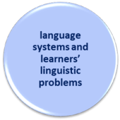

Delta Module One Course
 |
Syllabus area 3
|
|  |
This section of the syllabus covers these areas and you should be able to:
|
To be able to do this you need a knowledge of these areas. The following has links to many of the guides on this site which cover the areas. You should follow those and then return to this page to try some tests of your knowledge.
 |
An overview of what you need to know |
This is the largest area of the syllabus for Module One because it covers all areas of language and includes the consideration of the problems that can be encountered teaching and learning the systems.
Language can be analysed from a variety of standpoints and those who teach it need to be able to use all of them. Very briefly:
- We can analyse language from the point of view of
sociolinguistics in which the focus is on how language functions
in society to maintain social cohesion, support power, increase or
decrease social distance, be a distinguishing mark of individual
identity or a mark of inclusion in a wider cultural identity and
so on.
In the Module One examination, this area is focused on by asking you to identify genre, assess the effectiveness of written work in terms of its effect on the reader and analyse the communicative purpose of materials. - We can analyse a language from the standpoint of what
distinguishes it from other languages and where it sits in
relation to them. Is it, for example, closely related to
other languages or fundamentally different? We can use
these data to help us anticipate and deal with difficulties as
well as understand how a learner's language background may
assist or hinder the process of learning English. This approach will
also include, especially in the case of English, the use of the
language as an international, culturally independent lingua
franca.
In the examination, this area encompasses issues to do with learner errors and their sources. - We can analyse language as a matrix of interlocking systems:
grammar, lexis, phonology, appropriacy etc. This allows us
not only to decide what to teach but, to a large extent, how to
present language and language use in a way that is consistent
and logical.
In the examination, this area is covered by asking you to analyse a text written by a learner and look for strengths and weaknesses and also in the question in which you are asked to analyse a piece of well-written authentic material.
This and the guides linked from this page are intended to help with all three.
 |
Six important areas |
There are six areas with which you should be familiar and it is
impossible to judge which will be the most important in the
examination paper you will get.
In most cases, a knowledge of all six areas will be important and
you should look out for examples in the examination materials of
each of them.
The following is very brief. Read on for more help and advice.
- Discourse
- refers to elements of the language longer than a single
sentence or utterance.
A dialogue in which people are responding to each other's utterances is an example of conversational discourse.
A text in which internal and external references are made to what precedes and what follows is also an example of discourse.
In this area, the most important things you need to recognise and analyse are:- cohesion and coherence in spoken and written text (how longer stretches of language are internally linked and comprehensible including the issue of the use of pro-forms)
- deixis (how we refer to events and people which are not here, not now and not the speaker)
- conjunction (how ideas are joined, whether coordinated or subordinated, and how we signal the relationships between clauses and sentences)
- theme and rheme structures (how texts are ordered and how coherence is maintained by the staging of information)
- reported speech
- Lexis
- refers to the words in a language and is preferred over
a more simple term such as 'vocabulary' because its application
is wider than simply the words people use.
In this area, the most important things you need to recognise and analyse are:- word classes (all nine)
- lexical relationships (including issues of synonymy, antonymy, hyponymy, polysemy and so on)
- word formation (including conversion and compounding)
- collocation and colligation
- Syntax
- refers to the rules, principles and processes that lie
behind the formation of correctly formed sentences and clauses.
In this area, the most important things you need to recognise and analyse are:- the elements of sentences (phrases and clauses)
- constituents of clauses
- negatives
- interrogatives
- adverbials (adjuncts, disjuncts and conjuncts)
- phrase modification
- word order
- coordination and subordination
- Verbs and tenses
- refers to a subset of syntax but, on this site and in most
grammar references, takes a section to itself because the verb
and the verb phrase are of fundamental importance.
In this area, the most important things you need to recognise and analyse are:- tenses
- aspects
- clause structures
- case
- multi-word verbs
- passive and causative structures
- verbal processes
- Modality
- is not just concerned with modal auxiliary verbs. It
is the systems in a language which allow speakers to express
their intentions, abilities and willingness and beliefs about
whether something is real, hypothetical, desirable, true,
possible or obligatory.
In this area, the most important things you need to recognise and analyse are:- the four main types of modality
- epistemic
- dynamic
- deontic
- alethic
- modal auxiliary verbs: pure / central, semi- and marginal
- other modal expressions: modal adjectives, adverbs and nouns, mostly
- mood and the subjunctive
- the four main types of modality
- Phonology
- not phonetics: you are only expected to be able to recognise
and analyse the sounds of English.
In this area, the most important areas are:- vowels
- consonants
- connected speech phenomena
- transcription of sounds
The Delta syllabus does not explicitly require transcription skills but it is almost impossible to refer sensibly to pronunciation skills and teaching without some ability to transcribe important phenomena.
That's rather a lot and the list is by no means complete.
How, then, do you decide what you need to study and what you can
safely assume you already know enough about?
Help is at hand.
Barrier tests |
This is a very large area with many guides to various aspects of
language systems. In particular, the areas on discourse,
lexis, syntax, modality and verbs and tenses contain multiple guides.
To help, what follows
has links to barrier / diagnostic tests in each of five main areas.
If you score very well in any test, it means that this area is not a
priority for you. On the other hand, ...
The
test items will, if you get the answer wrong, link you directly to the
guide or guides you should be using to learn how the systems work.
All those links open in new tabs so you can follow the guide and
then return to the test by simply closing the guide.
The tests themselves do not open in new windows or tabs so use the
button to return to this page.
At any time, refreshing the page will remove all your answers and
allow you to try again.
The index pages open in a new tab so you just need to shut
what you find from there to return to it.
Once you have accessed the guides to which you are directed, come
back to this page and try the tests again.
Additionally, you can take a 25-item general test of your grammar for Delta, the first link, which will direct you to the guides you need in each area where you make a mistake. That page opens in an new tab so simply shut it to return.
 |
A quick course |
This is an area which many people who have only the knowledge of
grammar imparted to them on an initial training course, worry about.
If you have the time, on this site you will find a 10-unit
course covering:
- the elements of pronunciation
- word class
- content and function words
- subjects and objects
- tenses and aspects
- modality
- sentences, phrases, clauses
- text structures
The course will provide you with the foundation you need to
handle the demands of the examination.
Click here to open the index page of that course in a new tab.
That is particular important if you do not do well in any of the
barrier tests.
Diagnostic / barrier tests |
|
| The Delta 25-item grammar barrier test | |
| Discourse test | the index of discourse guides |
| Lexis test | the index of lexis guides |
| Syntax test | the index of syntax: phrases, and clauses and sentences guides |
| Verbs and tenses test | the index of verbs, tenses and aspects guides |
| Modality test | the modality index |
|
Missing from the list above is mention of phonology.
This is because a barrier test is of less use: you either
can or can't transcribe the sounds of English accurately. The link below is to the course in transcribing the sounds of English and that contains a variety of tests of your skills in this area. |
|
| If you need a course in phonemic transcription click here: | A course in phonemic transcription |
Other areas of this part of the syllabus to which there are
guides on this site include the following.
All the links open in a new tab.
| Genre | a guide to how language varies depending on its purpose in the speech community |
| Types of languages | a guide to how languages differ in important aspects |
| Variety | a guide which considers varieties of English, their sources and the role of English as an international language |
| Syntax | a guide to what it is and why we need to know about it |
| Verb types and clause structures | a guide to how clauses vary and are constructed in English |
| Language transfer | a guide to how the learners' first language(s) may hinder or help the acquisition of another language |
| Word order | a guide to a critical area of differences between English and many other languages |
| Error | to help with the examination question which focuses on learner production |
 |
Where next? |
When you have taken the tests and worked through the
recommended guide or guides, it's time to test your knowledge in
these areas and then do some revision exercises.
If you have followed the guides in the systems analysis sections,
you'll have done lots of tests along the way so there are only five
to do at this time.
The tests for this section focus on the slightly bigger picture
and include only:
Learning styles
Style and Register
Suasion
Language variety, style and register
Culture and learning style
Here are the choices:
| The 5 tests | to check what you can remember. Do these first. |
| Revision course index | there is a section of the Delta Module One Revision Course for this area of the syllabus |
| Examination practice | apply the knowledge you have gained to practising for the examination (new tab) |
 |
 |
| course index | exam practice |